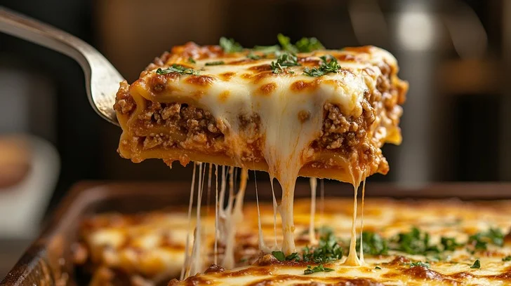

Home
Classic Lasagna

Description
A rich and creamy homemade lasagna, layered with tender pasta, savory meat sauce, and three types of cheese. This classic Italian dish is perfect for family dinners and special occasions.
Ingredients
- 1 pound ground beef
- 1 pound Italian sausage
- 1 large onion, chopped
- 4 cloves garlic, minced
- 2 cans crushed tomatoes
- 2 cans tomato sauce
- 2 tablespoons dried basil
- 1 package lasagna noodles
- 16 ounces ricotta cheese
- 1 egg
- 1/2 cup grated Parmesan cheese
- 16 ounces mozzarella cheese, sliced
Steps
- Brown the ground beef and Italian sausage with onions and garlic.
- Add tomatoes, sauce, and seasonings. Simmer for 30 minutes.
- Cook lasagna noodles according to package directions.
- Mix ricotta cheese with egg and Parmesan.
- Layer in baking dish: sauce, noodles, ricotta mixture, mozzarella.
- Repeat layers and finish with cheese on top.
- Bake at 375°F for 25 minutes covered, then 25 minutes uncovered.